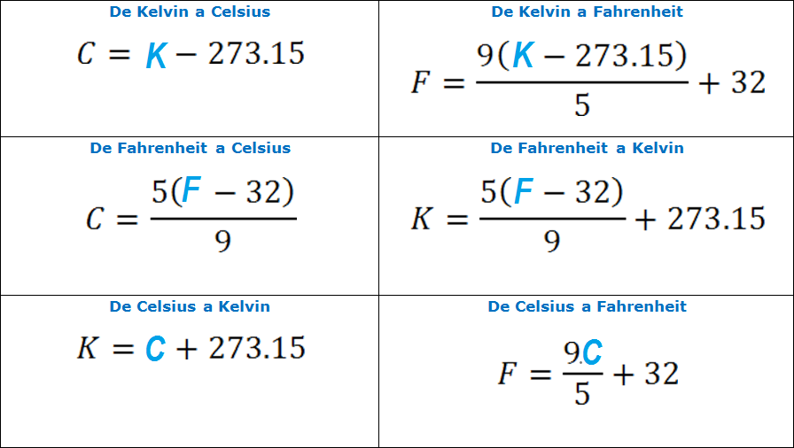

Las funciones reúnen una secuencia de operaciones como un todo, almacenándola para su uso continuo. Las funciones proveen:
un NOMBRE que podemos recordar y usar para invocarla
una solución para la necesidad de recordar operaciones individuales
un conjunto definido de inputs y outputs esperados
una mayor conexión con el ambiente de programación
Como el componente básico de la mayoría de los lenguajes de programación, las funciones definidas por el usuario constituyen la “programación” de cualquier abstracción que puedas hacer.
Si has escrito una función, eres ya todo un programador.
Problema: Realizar un algoritmo que solicite al usuario dos numeros enteros, realice su suma y la imprima en pantalla.
Mostrar código
# ---Algoritmo(Sumar)---# 1) Solicitar al usuario los datos de entrada (variable a y b).# --INICIO--a <-readline("Digite el primer numero: ")b <-readline("Digite el segundo numero: ")# Convertir la entrada en números enterosa <-as.integer(a)b <-as.integer(b)# 2) Realizar la suma de los datos de entrada.c <- a + b # 3) Mostrar el resultado.print(c)# --FIN_INICIO--# --- Fin_de_Algoritmo(Sumar) ---
4 Nuestra primera función
Problema: Crear una función que reciba dos numeros enteros y realice su suma.
Mostrar código
my_sum <-function(a, b) { c <- a + breturn(c)}
my_sum: es el nombre de la función que creamos.
a,b: son los dos números, los argumentos de la función.
c <- a + b: es la operación suma de los argumentos.
return(c): nos regresa el valor de la suma de los argumentos.
Nota
¿Qué nos falta en la función?
Respuesta
No estamos verificando que los valores de entrada sean números enteros. Actualmente, la función acepta cualquier tipo de dato que pueda sumarse.
Ejercicio: Nuestra segunda función
Define una función que reciba dos números enteros como argumentos, calcule su suma y muestre el resultado en pantalla. Asegúrate de que la función funcione correctamente para distintos valores de entrada.
Solución
Mostrar código
my_sum <-function(a, b) {# Convertir la entrada en números enteros a <-as.integer(a) b <-as.integer(b)# Realizar la suma de los datos de entrada c <- a + b# Mostrar el resultadoreturn(c)}
4.1 Verificación / Realizar pruebas
Una vez definida la función, es importante evaluarla para comprobar que realiza correctamente la operación esperada.
Antes de ejecutarla, responde:
¿Qué resultado esperas obtener al evaluar my_sum(3, 4)?
Mostrar código
my_sum(3,4)
[1] 7
5 Conversiones de temperatura

Fórmulas de Temperatura
5.1 Conversión de Fahrenheit a Kelvin
Vamos a crear otra función para convertir unidades de Fahrenheit a Kelvin.
---title: "El ABC de las funciones"author: "Haydeé Peruyero, [https://haydeeperuyero.github.io/](https://haydeeperuyero.github.io/)"lang: esdescription: "Material introductorio para crear funciones en R de los Viernes de Bioinfo 2026. Basado en [El ABC de las funciones y loops en R por Evelia Coss](https://eveliacoss.github.io/ViernesBioinfo2023/Clase5_20Oct2023/D5_Loop.html#1)"---# ¿Qué es una función?Las funciones reúnen una secuencia de operaciones como un todo, almacenándola para su uso continuo. Las funciones proveen:- un **NOMBRE** que podemos recordar y usar para invocarla- una **solución para la necesidad** de recordar operaciones individuales- un conjunto definido de **inputs y outputs** esperados- una **mayor conexión** con el ambiente de programaciónComo el componente básico de la mayoría de los lenguajes de programación, las funciones definidas por el usuario constituyen la “programación” de cualquier abstracción que puedas hacer.Si has escrito una función, eres ya todo un programador.[Source](https://swcarpentry.github.io/r-novice-gapminder-es/10-functions.html)# Tips para generar una función](figures/structure_functions.png)# Nuestro primer código> **Problema:** Realizar un algoritmo que solicite al usuario *dos numeros enteros*, realice su suma y la imprima en pantalla.```{r Primer codigo, eval=FALSE}# ---Algoritmo(Sumar)---# 1) Solicitar al usuario los datos de entrada (variable a y b).# --INICIO--a <-readline("Digite el primer numero: ")b <-readline("Digite el segundo numero: ")# Convertir la entrada en números enterosa <-as.integer(a)b <-as.integer(b)# 2) Realizar la suma de los datos de entrada.c <- a + b # 3) Mostrar el resultado.print(c)# --FIN_INICIO--# --- Fin_de_Algoritmo(Sumar) ---```# Nuestra primera función> **Problema:** Crear una función que reciba *dos numeros enteros* y realice su suma.```{r Funcion - my_sum v1}my_sum <-function(a, b) { c <- a + breturn(c)}```- `my_sum`: es el nombre de la función que creamos.- `a,b`: son los dos números, los argumentos de la función.- `c <- a + b`: es la operación suma de los argumentos.- `return(c)`: nos regresa el valor de la suma de los argumentos.::::: callout-note¿Qué nos falta en la función?::: {.callout-tip collapse="true" icon="false"}## RespuestaNo estamos verificando que los valores de entrada sean números enteros. Actualmente, la función acepta cualquier tipo de dato que pueda sumarse.::::::::::::: callout-note## Ejercicio: Nuestra segunda funciónDefine una función que reciba dos *números enteros* como argumentos, calcule su suma y muestre el resultado en pantalla. Asegúrate de que la función funcione correctamente para distintos valores de entrada.::: {.callout-tip collapse="true" icon="false"}## Solución```{r Funcion - my_sum v2}my_sum <-function(a, b) {# Convertir la entrada en números enteros a <-as.integer(a) b <-as.integer(b)# Realizar la suma de los datos de entrada c <- a + b# Mostrar el resultadoreturn(c)}```::::::::## Verificación / Realizar pruebasUna vez definida la función, es importante evaluarla para comprobar que realiza correctamente la operación esperada.Antes de ejecutarla, responde:> **¿Qué resultado esperas obtener al evaluar `my_sum(3, 4)`?**```{r Verfiicar my_sum}my_sum(3,4)```# Conversiones de temperatura## Conversión de Fahrenheit a KelvinVamos a crear otra función para convertir unidades de Fahrenheit a Kelvin.```{r Funcion - fahr_to_kelvin}fahr_to_kelvin <-function(temp) { kelvin <- ((temp -32) * (5/9)) +273.15return(kelvin)}```[Sofware Carpentry, Funciones](https://swcarpentry.github.io/r-novice-gapminder-es/10-functions.html)## Verificación / Realizar pruebas```{r Verfiicar fahr_to_kelvin}fahr_to_kelvin(32) # Punto de congelación del aguafahr_to_kelvin(212) # Punto de ebullición del agua```## Conversión de Kelvin a Celsius```{r Funcion - kelvin_to_celsius}kelvin_to_celsius <-function(temp) { celsius <- temp -273.15return(celsius)}```[Sofware Carpentry, Funciones](https://swcarpentry.github.io/r-novice-gapminder-es/10-functions.html)## Verificación / Realizar pruebas```{r Verfiicar kelvin_to_celsius}kelvin_to_celsius(300) kelvin_to_celsius(400) ```